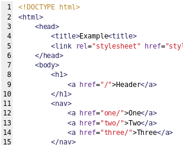

L'HyperText Markup Language, généralement abrégé HTML ou dans sa dernière version HTML5, est le langage de balisage conçu pour représenter les pages web. C'est un langage permettant d'écrire de l'hypertexte, d'où son nom.
Les feuilles de style en cascade, généralement appelées CSS de l'anglais Cascading Style Sheets, forment un langage informatique qui décrit la présentation des documents HTML et XML.

Avec les technologies HTML et CSS, JavaScript est parfois considéré comme l'une des technologies cœur du World Wide Web5. Le langage JavaScript permet des pages web interactives, et à ce titre est une partie essentielle des applications web. Une grande majorité des sites web l'utilisent6, et la majorité des navigateurs web disposent d'un moteur JavaScript dédié pour l'interpréter